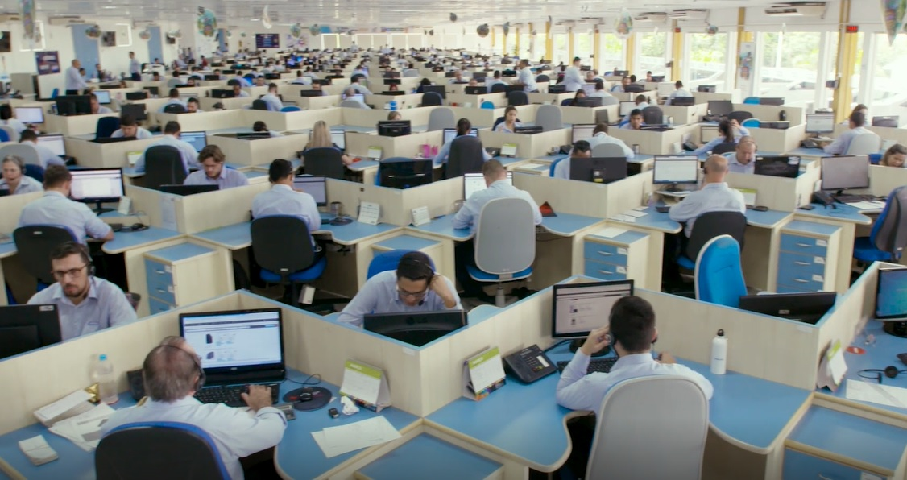
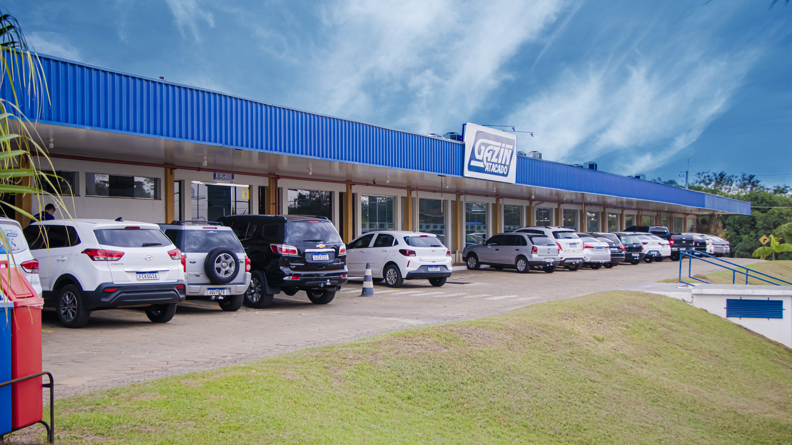
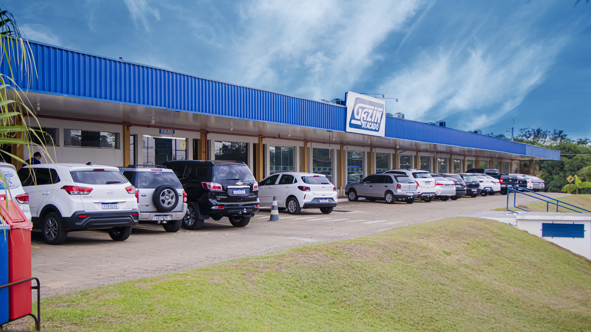

Gazin Atacado
A Gazin Atacado, foi criado no ano de 1996, e atualmente, é um dos principais negócios da empresa, o Atacado da Gazin é conhecido como uma das maiores Atacadistas do Brasil. O setor de televendas na cidade de Douradina-PR, atende vários lojistas do pais inteiro, recebendo suas mercadorias sempre com agilidade, pontualidade e o principal de tudo qualidade, que é o principal objetivo da emrpresa, sempre buscando o melhor para o cliente O Gazin Atacado tem 14 Centros de Distribuição pelo Brasil. Esse setor da emrpresa está em constante evolução, sempr evulindo ano após ano. A empresa vem investindo em programas de Acompanhamento e suporte aos lojistas, sempre inovando na variedade de produtos, esses são alguns dos segredos para o suceso.

Treinamentos
A Gazin Atacado realiza treinamentos com os seus vendedores e supervisores em algumas datas específicas, os objetivos desses treinamentos são melhorar a parte técnica e a gestão de negócios e equipes. A intenção de realizar treinamentos, é sempre desenvolver cada cada vez mais e buscar o melhor dos funcionários que realizam esse treinamento, para que eles consigam ter o melhor desempenho possível em seus respectivos cargos. Por isso o Gazin Atacado é reconhecido no pais inteiro, pois por conta desses treinamentos, os funcionários conseguem desempenhar o seu papel da melhor maneira possível, e claro, sempre buscando o melhor negócio para o clinte.
 

Uma das maiores Atacadistas do Brasil
A Gazin Atacado, consegue se destacar como uma das maiores e melhores atacadista
do Brasil, sempre oferecendo uma grande variadade de seviços e produtos para
atender todas às suas necessidades.
Desde a sua fundação, o principal objetivo é ser o melhor parceiro para o se negócio.
Atuando como revendedor, você pode contar com a Gazin Atacado para que eles forneçam
produtos de qualidade alta, uma distribução muito eficaz e uma parceria que pode te
ajudar a alcançar todos seus objetivos e metas comercias.
A Gazin Atacado possui 14 Centros de Distribuição posicionados em todo o pais.
Ou seja, isso garante que suas mercadorias sejam entregues o mais rapido possível, sempre
com pontualidade, e também a empresa tem uma ampla frota própria, que garante a entrega
de forma rápida de todos os produtos em todo o Brasil.
Uma das grandes vantagens da Gazin Atacado é a diversidade de produtos que são oferecidos, que
variam de produtos de informática até móveis e eletrodomesticos, uma grande linhade produtos
para poder atender as necessidades do seu negócio.